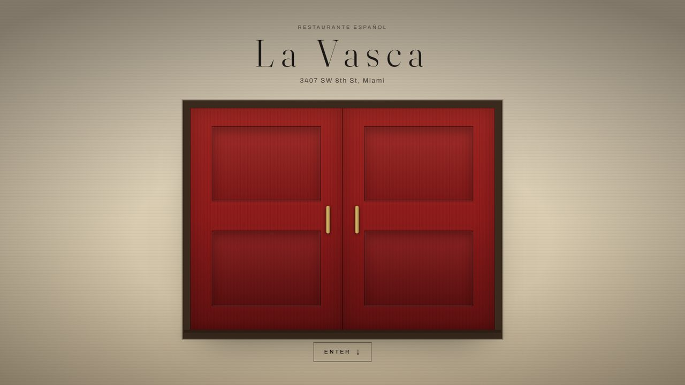
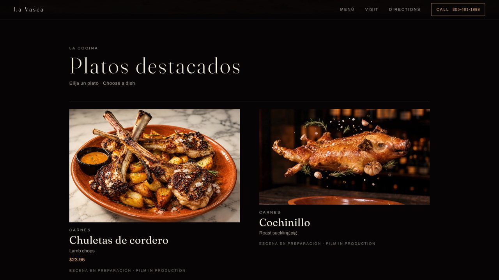
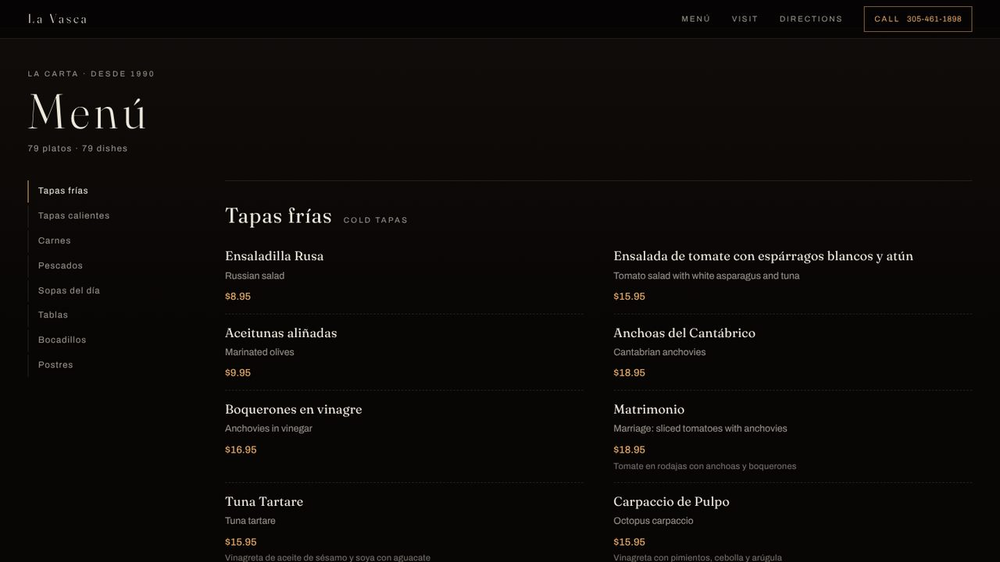
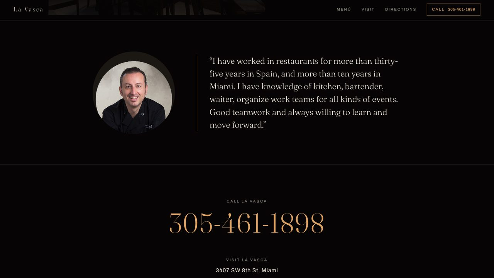
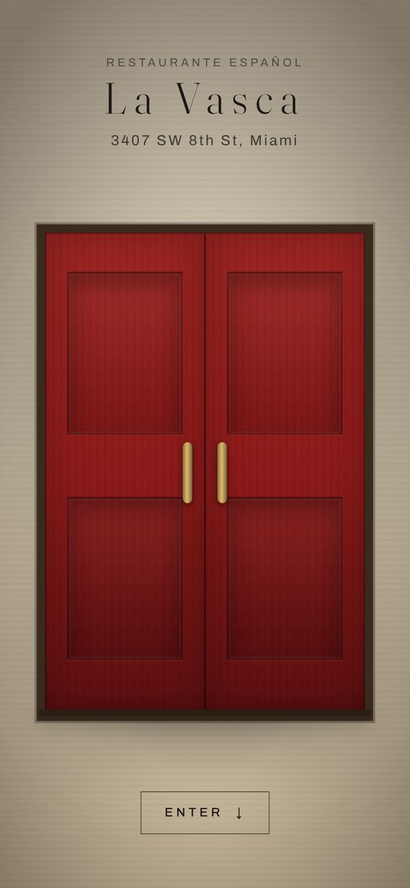
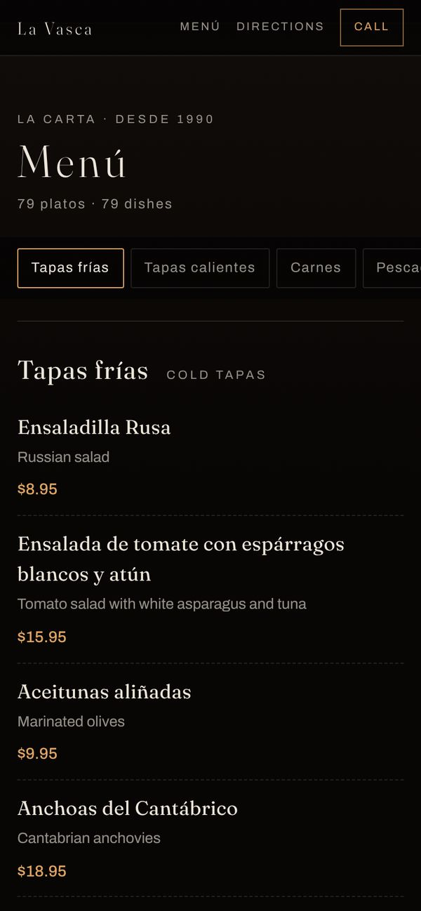
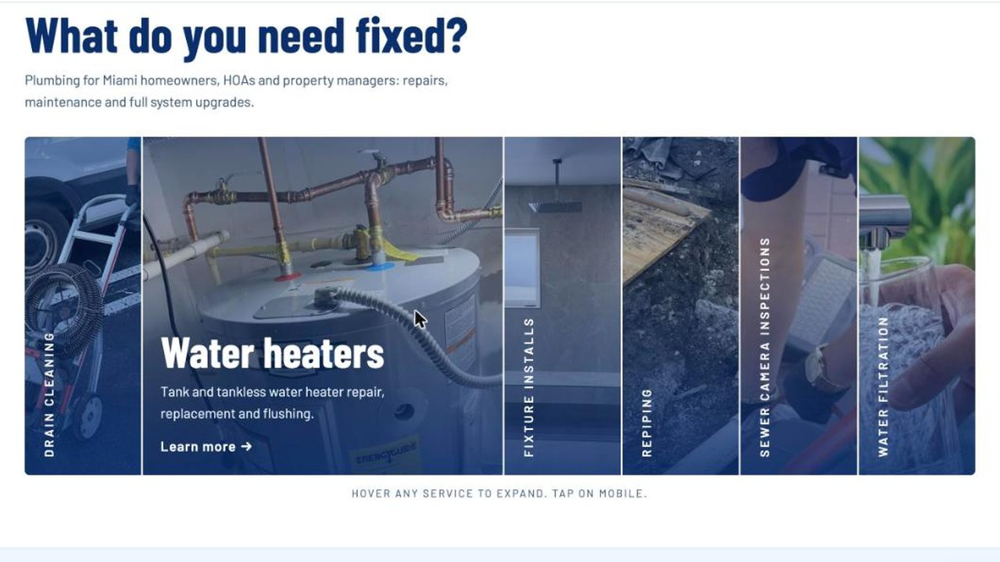

Websites · Brand · Films · Meta ads · Google review cards
Showcase
Every logo here started with one free homepage.

The entrance
Walking into La Vasca is the whole pitch, so the site starts at the door. Scroll and the red doors open, the camera pushes through, and the first thing you meet inside is the signature dish.
Pulpo a la Gallega, held above the plate.
The signature dish
The film is tied to the scroll: down advances it, up rewinds it. It never plays on its own, so the visitor sets the pace.

Featured dishes, each with a film of its own.

The full menu, 79 dishes.
The menu
All 79 dishes in Spanish and English with prices, in the restaurant's own sections. A section menu follows as you read, and the featured dishes, lamb chops and roast suckling pig, each have a film of their own.

The chef, and the call and visit block beneath him.
The chef
His portrait and his own words, exactly as he gave them. Call, directions and the store stay one tap away on every screen.


On a phone
Where most of their customers will see it: the door, the dish and the menu, one thumb away.
What we made
The website, designed and built from scratch.
The door opening and the scroll-driven dish films.
The full menu, typed up in both languages.
Featured dishes with their own films and stills.
The chef's portrait and words.
Call, directions and the store on every screen.
The three-second read
Before you scroll: what they do (same-day plumber), where (Miami), a price ($49 flush), a phone number, a second way in (free estimate), and 5.0 on Google. Six things, one screen, white type on a real photo of the plumber. Nothing to figure out. That's the whole lesson of a trades site and most of them miss it.

Six jobs as photo strips, every one a real job of theirs. The one you hover opens.
How it's built
No WordPress, no page builder, no framework. Hand-written static HTML — one 78 KB page with its styles (22 KB) and its scripts (34 KB) written straight into it, so there's nothing to load before it paints. Two Google fonts, Barlow and Barlow Condensed. Served through Cloudflare. The only outside code is a Google Ads conversion tag, a call-tracking script, and Cloudflare's analytics. The interactive bits — the hover strips, the FAQ, the floating emergency card, the area checker — are a few hundred lines of plain JavaScript. It's the same way we build: the page is the product, not the platform.
The order of the page
Hero: the promise, the price, the phone.
Three priced specials — the cheap first visit.
What do you need fixed? — six jobs, each a page.
Five reasons to call, in one line each.
HOAs and property managers — the bigger customer gets its own door.
Four Google reviews, then four steps.
Eighteen neighborhoods and a "check my area" form.
FAQ, then the lead form. The phone number appears on every screen.
The Google profile behind the 5.0: verified, 90% complete, 934 views since June.Same van, same blue, same M on Instagram.
Why Google finds it
Behind the homepage are 18 neighborhood pages (plumber-brickell, plumber-kendall, plumber-hialeah…), six service pages, three special pages and a guides section — each its own address. The page carries a Plumber schema block with the name, phone, email and address, and the title and description say exactly what the business does. When someone in Pinecrest searches "plumber near me", there's a page waiting with Pinecrest in it. That isn't design; it's just doing the work.
What we'd build the same way
A price on the first screen — a small, specific one.
The phone number in reach on every screen, and a bottom bar on phones.
A page per service and per neighborhood, from day one.
Real reviews with names, real photos of the owner at work.
Plain, fast, hand-built pages. No platform in the way.